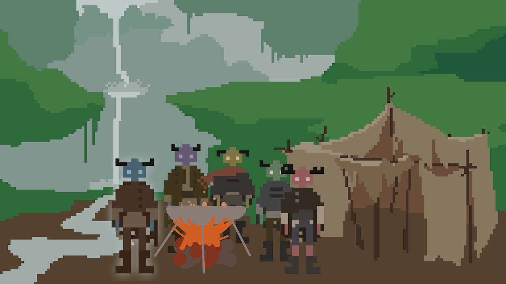

An Adventure Cooking Game

Download and play the game here!
YOUR EYES OPEN. The stench of burning houses still lingers in the air. 5 survivors stumble their way into your forest encampment. You can tell they won’t last long without your help. The attack left them pale and sickly. YOU STAND UP. And prepare to delve deeper into the cave . Deeper than you ever wanted to go... To get what they need to survive.
KEY FEATURES: A unique but old school pixel art style. A mix of relaxing campsite vibes and tense cave spelunking excitement. Passive world building via a plethora of NPC to NPC dialogue.
This game was created as a senior capstone project while at university. I collaborated in a team of 12 students, meeting multiple times per week to discuss progress and blockers and assign new tasks. My main collaboration for this project was doing pixel art, but I also contributed to game design and assited with programming when necessary.